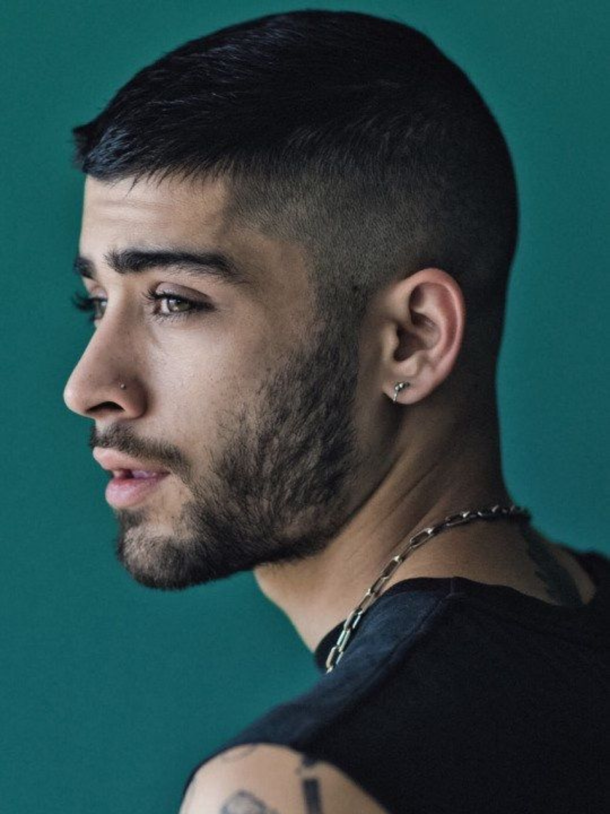

Although he did not make the final rounds as a solo vocalist, he joined forces with Harry Styles,
Liam Payne, Zayn Malik and Louis Tomlinson to form the highly successful boy band One Direction.
Horan later launched a solo career, topping the charts in 2017 with his debut album, Flicker.
In 2010, when he was 16 years old, Horan auditioned for the television talent competition
The X Factor. He moved through several rounds of preliminary auditions, culminating in a
performance for the program's judges, including Simon Cowell and guest judge Katy Perry, in
Dublin. He sang a version of Ne-Yo's "So Sick" and was accepted into the official competition.
Although he was eliminated as a solo contestant after the semifinals, the judges combined Horan
with Harry Styles, Liam Payne, Zayn Malik and Louis Tomlinson to form the boy band One
Direction.
Although One Direction did not win the final round of The X Factor, the band
immediately received a contract with Cowell's label Syco and recorded its first album, Up All
Night, which became a best seller in the United Kingdom in 2011 and in the United States in
2012.
The only One Direction member born outside England, Horan enjoyed tremendous success
with his
bandmates, their albums Take Me Home (2012), Midnight Memories (2013) and Four (2014) all
debuting atop the Billboard 200.
Horan dropped his debut solo single, "This Town," in
September 2016. He followed with two more singles, "Slow Hands" and "Too Much to Ask," before
finally delivering the chart-topping album Flicker in October 2017.
Niall Horan

Niall Horan was born on September 13, 1993, in Mullingar, County Westmeath, Ireland. At the age of 16, he auditioned for the television show The X Factor and was accepted into the competition.
Zayn Malik
Malik was born Zain Javadd Malik on January 12, 1993, in Bradford, a town located in the county of West Yorkshire in Northern England. Zayn Malik had an early love for singing and performing, and at the age of 17, he appeared on the competition series The X Factor.
Malik was eliminated before the final round of the competition, but judges Nicole Scherzinger and
Simon
Cowell grouped him with fellow competitors Harry Styles, Niall Horan, Liam Payne and Louis Tomlinson
to
form a new act for the remainder of the show.
One Direction topped the pop music charts with
their first single, "What Makes You Beautiful," when it was released in September 2011 in the United
Kingdom. Their debut album, Up All Night, was a best seller in both the United Kingdom and the
United
States in 2012. Malik toured extensively with One Direction, meeting the band's young female fans
around
the world.
In March 2015, Malik surprised fans by dropping out of the group's world tour. A
spokesperson for the band tweeted that "Zayn has been signed off with stress and is flying back to
the
UK to recuperate." On March 25, Malik announced that he was leaving One Direction for good. In a
statement on Facebook, he wrote: "After five years, I feel like it is now the right time for me to
leave
the band. I'd like to apologize to the fans if I've let anyone down, but I have to do what feels
right
in my heart."
Not long after leaving One Direction, Malik launched his solo music career with
a
demo version of "I Don't Mind," which was leaked online by producer Naughty Boy. Official singles
soon
followed, including "Pillowtalk" and "It's You." Both of these tracks were featured on his first
album,
Mind of Mine, which debuted at No. 1 in both the U.K. and the U.S. in spring 2016. Malik also
enjoyed
commercial success later that year for his collaboration with Taylor Swift on "I Don't Wanna Live
Forever," from the Fifty Shades Darker soundtrack.
Liam Payne

Liam was born in Wolverhampton, West Midland, England, UK. He unexpectedly died at age 31 after falling from a third-floor hotel balcony in Buenos Aires, Argentina, in October 16th 2024. He was a member of One Direction from its inception on the TV competition show The X Factor in 2010
After One Direction's hiatus, Payne signed a recording deal with Republic Records in North
America. In May 2017, Payne released "Strip That Down" as the lead single from his debut album.
It peaked at number three on the UK Singles Chart and number ten on the US Billboard Hot 100, being
certified platinum in both countries. His debut album, LP1, was released in December 2019. He has
sold over 18 million singles in under three years since One Direction's hiatus, and over 3.9 billion
career streams in that span.
On 1 June 2022, Payne was interviewed by Logan Paul for his
podcast series, where he, while intoxicated, brought up several topics, among which he claimed that
One Direction originated with Simon Cowell's promise to him, and discussed about former fellow
member Zayn Malik's family life, where he declared, "There's many reasons why I dislike Zayn
and there's many reasons why I'll always, always be on his side." He then faced backlash
with the veracity of several of his claims contested. He subsequently clarified his remarks on
Malik and apologised. Later, in 2023, he announced his sobriety and revealed that he went
to a rehab facility after the controversial interview.
Liam Payne has been at the center of
several controversies over the past few years. From unearthed One Direction drama to that
embarrassing podcast appearance. Now, he's coming under fire with multiple accusations made by his
ex-fiance Maya Henry.
Harry Styles

Harry Edward Styles was born on February 1, 1994, in Bromsgrove, Worcestershire, in the West Midlands region of England. In 2010, when he was 16 years old, Harry competed in the seventh season of the television show The X Factor, singing Stevie Wonder's "Isn't She Lovely" as his audition song.
Styles, the youngest member of One Direction, became a fan favorite for his curly hair,
wide smile and sweet-yet-naughty demeanor. He sang some of the lead vocals on the band's first
single,
"What Makes You Beautiful," which was released in September 2011 in the United Kingdom. One
Direction's
debut album, Up All Night, was a best seller in both the United Kingdom and the United States the
following year. In another highlight of 2012, Styles and the rest of One Direction performed at the
Olympics closing ceremony in London.
Styles made a successful solo entry in 2017 with the
epic
single "Sign of the Times," his accompanying self-titled album debuting in the familiar No. 1 spot.
Fans
then waited another two years for his next single, which came in October 2019 with the soulful
"Lights
Up." His sophomore solo album, Fine Line, contained his first No. 1 single, "Watermelon Sugar." That
year he was also nominated for three Grammy awards.
After appearing in concert documentaries
with
One Direction, Styles made his feature film debut in Christopher Nolan's 2017 war thriller Dunkirk,
as an Allied soldier named Alex.
Louis Tomlinson

Louis Tomlinson was born on December 24, 1991, in the town of Doncaster in South Yorkshire, England. As a child and teen, Louis Tomlinson acted and sang on television and in school productions. He auditioned successfully for the television talent competition The X Factor in 2010.
Tomlinson auditioned for the television talent competition The X Factor in 2009 but was turned down.
However, when he returned to try out for the show's seventh season in 2010, his rendition of the
song "Hey There Delilah" by the Plain White T's brought him successfully into the
competition.
In later years, after his success with One Direction, Tomlinson returned to The
X Factor as a judge and mentor. In late 2018, one of his proteges, Jamaican singer Dalton Harris,
won season 15 of the show.
One Direction returned to the spotlight in February 2017, when its
final single from Made in the A.M., "History," was named Video of the Year at the Brit Awards.
Unable to attend the event, Tomlinson posted a clip to Twitter in which he thanked the group's fans,
saying, "You continue to surprise us with just how incredible you are."
December 2016 and
peaked at No. 2 in the U.K. Seven months later a follow-up single, "Back to You," with Bebe Rexha,
also cracked the Top 10. In March 2019 Tomlinson released "Two of Us," a tender tribute to his
mother.
The artist's mother, Johannah, succumbed to leukemia in late 2016, at age 43. Fifteen
months later, Tomlinson endured another tragedy when his 18-year-old sister, Felicite, died
following a heart attack. In January 2016, Tomlinson welcomed a son, Freddie Reign, with Briana
Jungwirth.